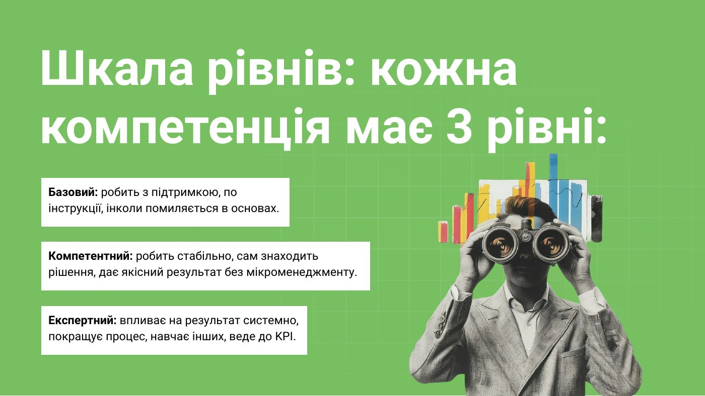
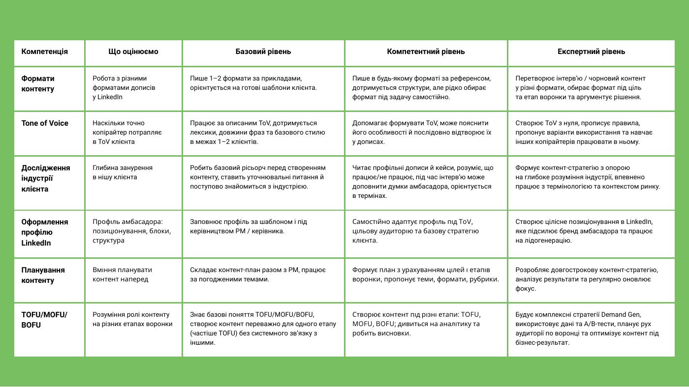
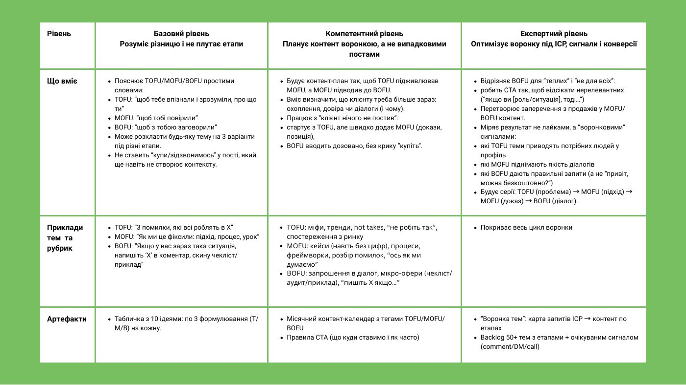

Матриця компетенцій LinkedIn-копірайтера
Базовий, компетентний чи експертний?
Оцініть рівень копірайтера за доказами, а не відчуттями. Матриця від команди Content Chameleon: 9 компетенцій, 3 рівні, приклади з реальної роботи і процес оцінки на 15–30 хвилин.
Дев’ять компетенцій, кожна на трьох рівнях
Для кожної: що саме оцінюємо, як звучить кожен рівень у робочих ситуаціях і які артефакти його підтверджують.
- Формати контенту: від тексту з фото до каруселей і скриптів для відео
- Tone of Voice: ядро бренду, стиль, лексика, форматування
- Дослідження індустрії клієнта: від глосарію до мапи ринку
- Оформлення профілю LinkedIn: хедер, ебаут, досвід
- Планування контенту: від плану на 2–4 тижні до кампаній
- TOFU / MOFU / BOFU: контент воронкою, а не випадковими постами
- Проактивність: від «сигналить і не блокує» до «веде як власник»
- Менторство: як вирощувати інших копірайтерів
- Відповідальність за результат і адаптивність до змін
Кілька сторінок з матриці



Одна матриця, дві задачі
Копірайтерам: самооцінка
Поставте собі 1, 2 чи 3 по кожній компетенції й підтвердіть посиланням на свою роботу. Побачите реальний рівень і що прокачувати наступним спринтом.
Менеджерам: оцінка команди
Оцінюйте копірайтерів за артефактами: контент-планами, постами, рев’ю. Там, де ваша оцінка й самооцінка не збігаються, — готова тема для розмови про ріст.
Надішлемо PDF на пошту
Залиште імейл — і ми надішлемо матрицю вам на пошту.
Знайшли, що прокачувати? Ось з чого почати
Курс «Інтерв’ю з експертом»
Для компетенцій «Дослідження індустрії» і «Планування контенту»: як дістати з фаундера чи C-level матеріал для сильного контенту. Веде Євген Гайдученко, 300+ інтерв’ю за 6 років.
Детально про курс →Курс «Сторітел та хуки»
Для компетенцій «Формати контенту» і «Tone of Voice»: як писати пости, які дочитують. Веде Ксенія Куца, шеф-редакторка Content Chameleon.
Детально про курс →